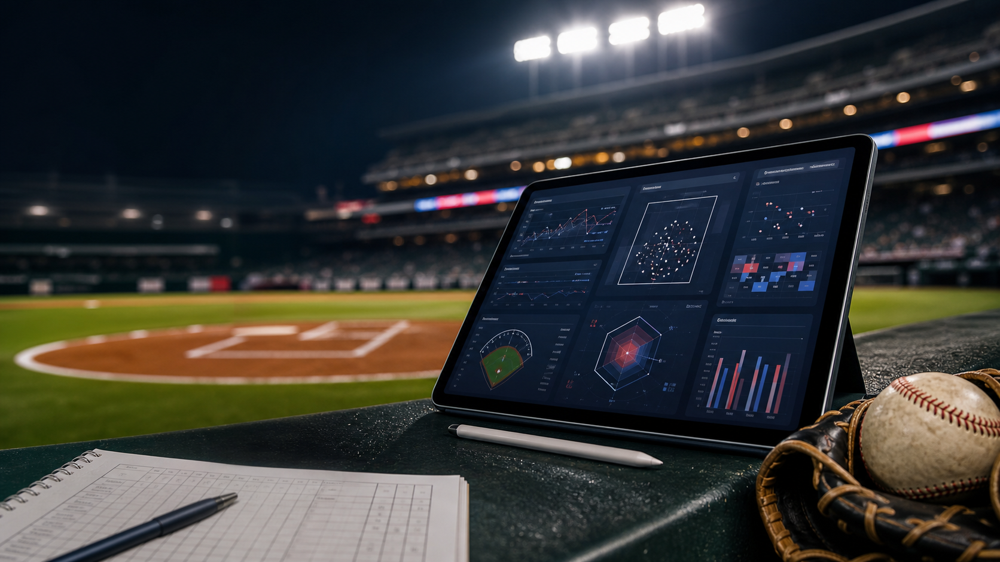

Sports dashboards often show numbers without context.
SlateSignal focuses on the why: team form, run profile, starter context, model confidence, and fair-line comparison in one workflow.

MLB intelligence
Compare MLB matchups, monitor model edges, review probable pitcher context, and track whether the numbers hold up after first pitch.
Loading MLB data...
Data freshness will appear after load.
Projected edge will update after teams are selected.
Project overview
SlateSignal is designed as a portfolio-quality sports analytics app: it pulls live MLB data, generates conservative matchup signals, explains the model inputs, tracks saved leans, and compares fair lines to market prices.
SlateSignal focuses on the why: team form, run profile, starter context, model confidence, and fair-line comparison in one workflow.
The app uses a small Node server, MLB Stats API data, a conservative model layer, local analyst explanations, and Render deployment.
The roadmap includes saved watchlists, historical odds, lineup data, alerts, and paid research reports once the analytics foundation is proven.
Today
This first version uses MLB team, schedule, and standings data. The model combines team strength, run profile, recent form, home field, and probable pitcher context.
Loading today's games...
Load today's MLB slate to see the strongest model lean.
Loading model leans...
Saved leans will settle after MLB marks games final.
Choose teams to generate a matchup read with strengths, risks, and a clear model explanation.
Market edge
Market feed unavailable in this public preview. Enter a moneyline manually to compare it with the model fair line.
Live scores refresh from MLB about once per minute. Automated market prices require a licensed odds feed.
The model converts the matchup lean into a fair moneyline.
Enter the listed DraftKings moneyline to calculate estimated value.
Enter the listed FanDuel moneyline to calculate estimated value.
Select a matchup to see how the model turns team strength into a fair moneyline and compares it to a market price.
Player projections
These projections use MLB probable pitchers and season pitching stats. They are useful before we add paid player-prop odds.
Select a scheduled game to see the matchup read.
Select a scheduled game to see the matchup read.
Probable pitcher comparison will appear here.
AI analyst
Ask about the selected matchup, fair line, pitcher edge, matchup notes, or manually entered odds. The local analyst only uses data shown here.
Model results
This combines the app's saved daily leans with a recent MLB sample using standings from before each game date.
No settled leans yet.
Waiting for finals.
Waiting for saved odds.
Calibrated pregame.
Recent model sample will appear here.
Saved lean history will appear here.
Methodology
The model is intentionally conservative. It is built to create research signals, not certainty, and every output should be judged against historical results and market prices.
Project notes
This section is written for interviews: it separates working features from clear next steps without pretending future business features are already live.
Real team data, schedule data, probable pitcher context, fair-line comparison, live score status, and saved model leans.
NowPersistent database storage, closing odds, lineup confirmations, bullpen rest, weather, and scheduled background jobs.
RoadmapThe monetized version would sell deeper reports, alerts, saved watchlists, and shareable matchup pages after results are validated.
LaterInterview angle
SlateSignal outputs are informational and experimental. They are not betting advice. The model must be reviewed against saved results and closing lines before any strategy should be trusted.